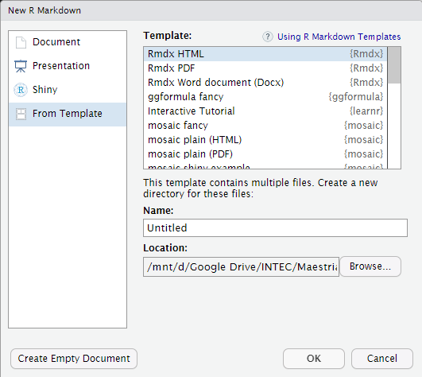

Rmdx provide very customize formats for Rmarkdown documents. The 3 main document availables are:
- rmxd_html
- rmdx_docx
- rmdx_pdf
- rmdx_paper
See examples for more details.
Installation
Rmdx is not yet in CRAN.
You can install the development version from GitHub with:
tryCatch(
library(remotes),
error = function(e){
install.packages('remotes')
}
)
remotes::install_github("drdsdaniel/Rmdx")Usage
If you are using RStudio, you can create a new Rmdx document from file menu: File -> New file -> R Markdown -> From Template.

You need to have restarted RStudio at least once since the Rmdx installation.
If you are working outside of RStudio or the desired file has already been created, you just need to set the output in the yaml to be Rmdx: rmdx_html.
Examples


rmdx_paper
Builded on top of arxiv_article. See rmdx_paper details in reference page for additional info.

crender
Rmdx also provide a template for easy start with crender package.
Roadmap
These are some of the ideas that at the moment I plan to add to the package. Feel free to propose any change that you consider pertinent. Look at Contributing below to see how.
- Make rmdx_docx full compatible with rdox_document
- Make a version of rmdx_html with float toc in the rmdx style
- Add Spanish language support for some of the rmdx functions
- Lots of changes to the rmdx_pdf format. To be notified on the fly.
- Add “Blockquotes” format. (rmdx_html)
- Format warning and errors messages.(rmdx_html)
- Go to top button. (rmdx_html)
- Paged HTML format.
- The ability of embed additional information to HTML file, like external files, datasets or r session information. This information may be accessed like modals, via the toc (if available) or for clickable elements in the footer of doc.
- Add tests for pdf and docx formats
Contributing
Have a feedback or want to contribute?
Please take a look at the contributing guidelines before filing an issue or pull request.
Please note that the Rmdx project is released with a Contributor Code of Conduct. By contributing to this project, you agree to abide by its terms.